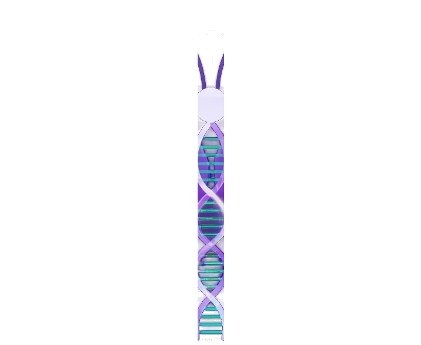

Decoding the genetics of lupus, one variant at a time.
We find the DNA variants that raise the risk of systemic lupus erythematosus and work out how they disrupt the immune system. Our aim is new drug targets and better care for people with lupus.

Illustrative Manhattan plot, labelled with lupus loci studied by the lab
From genome-wide signals to disease mechanisms
Lupus is not caused by a single gene. Many common variants combine with each other and with the environment to raise risk. Our work moves from finding where those variants are to showing what they do.
Genetic discovery
We use linkage analysis, genome-wide association studies, admixture mapping and meta-analysis in families and cohorts from many ancestries to find lupus risk loci, including ITGAM, CDKN1B, NCF2 and KLF2.
Functional genomics
Epigenomics, 3D chromatin assays and CRISPR/Cas9 editing show how non-coding risk variants switch enhancers and promoters on or off, and which genes they control.
Precision medicine
Linking genetic variation to disease features helps find therapeutic targets and biomarkers for diagnosing lupus, predicting flares and improving outcomes.
Twenty-five years of lupus genetics
The regions and genes the lab has found or studied, from family linkage scans to variants tested with CRISPR. Choose a view.
Featured studies from the lab
Click a figure to browse it full size.
New papers
- A highly prevalent lupus risk haplotype increases IRF7-dependent induction of IFN-α, enhancing antiviral defense and exacerbating autoimmunityThe American Journal of Human Genetics 113 (10), 2118-2139 · 2026
- Community series in towards precision medicine for immune-mediated disorders: advances in using big data and artificial intelligence to understand heterogeneity in inflammatory …Frontiers in Immunology 17, 1878718 · 2026
- Variants in IRF5 Increase the Risk of Primary Sjögren’s Syndrome in the Mexican PopulationInternational Journal of Molecular Sciences 27 (2), 599 · 2026
- Impaired molecular mechanisms contributing to chronic pain in patients with hidradenitis suppurativa: exploring potential biomarkers and therapeutic targetsInternational journal of molecular sciences 26 (3), 1039 · 2025
- Defining Mechanistic Links Between the Non-Coding Variant rs17673553 in CLEC16A and Lupus SusceptibilityInternational Journal of Molecular Sciences 26 (1), 314 · 2025
From OMRF
- OMRF receives $3.4 million to explore genetic links to lupusStudy will focus on DNA errors that disrupt a routine cleanup process in kidney cells
- OMRF scientist links genetic variant to lupusVariant appears to predispose Asian people to the disease
- OMRF awarded two new grants to study lupus genesFunding to examine genes thought to play a role in lupus
- International study reveals 24 new genes associated with lupusFindings will help scientists understand how to better diagnose and treat the disease
- Researchers discover 10 new lupus genes in Asian population studyPublished in Nature Genetics
Lupus affects many organs, and many people
Systemic lupus erythematosus is a complex autoimmune disease that can damage the kidneys, skin, joints and cardiovascular system. It affects women far more often than men and weighs most heavily on people of African, Hispanic and Asian ancestry.
Finding the genes behind lupus shows how the disease starts and progresses: which immune pathways go wrong, and where new treatments could act.
- Studies across European, African American, Hispanic, East Asian, South Asian and Middle Eastern populations
- Patient-derived immune cells, primary tissues, cell lines and iPSCs
- High-throughput omics, chromatin conformation (3C, Hi-C) and ChIP-seq
- CRISPR/Cas9 editing to introduce or correct risk variants